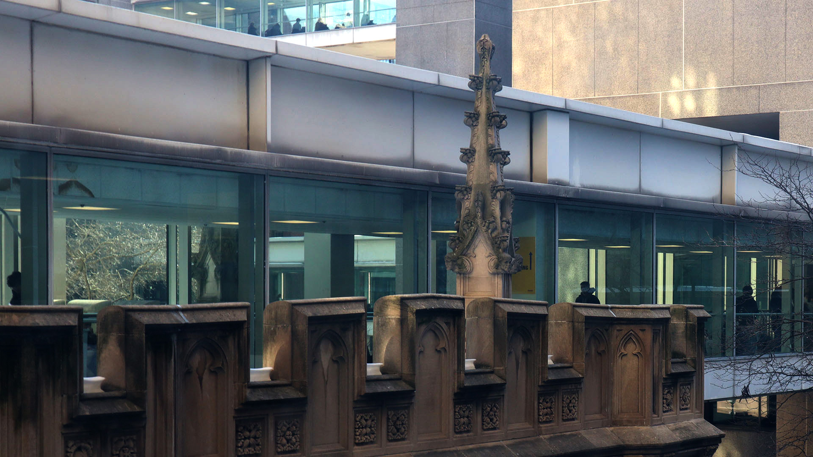

In this image, I chose to capture a hallway that I routinely walked through for the past year and a half. I often see it as an obstacle in my efforts to get to class on time, especially if I’m coming from a high floor in the West building. I feel like I was able to capture the architectural interest of Hunter College here– focusing on the contrast between the campus’ foundations in the late 1800’s to the more modern additions as it turned into a CUNY flagship school. I deepened the tone of the image to bring out some of the details on the Thomas Hunter building. This change sort of highlights how architecture started prioritizing function over decoration, which also reflects how education has become increasingly more accessible in our “modern” age.